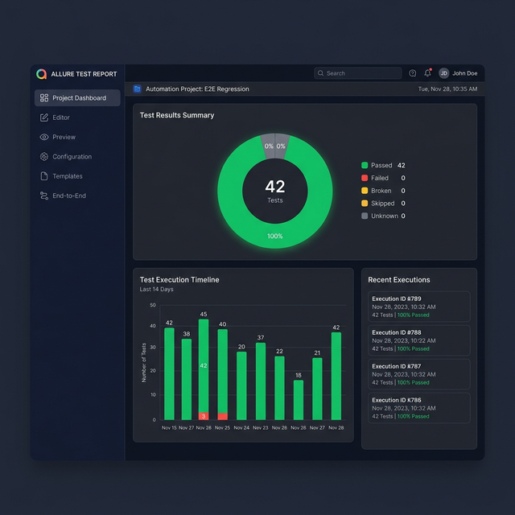
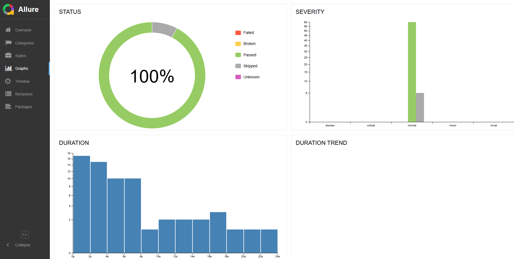
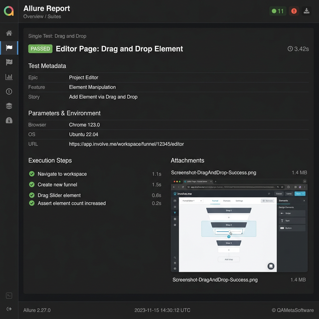

A professional test automation suite for involve.me, powered by the Page Object Model pattern, Allure reporting, Docker CI/CD, and cross-browser support.
A carefully chosen set of technologies that delivers reliability, speed, and comprehensive reporting.
Powerful Python testing framework with fixtures, parametrize, hooks, and rich plugin ecosystem for scalable test organization.
Cross-browser automation by Microsoft with auto-waiting, reliable selectors, and support for Chromium, Firefox, and WebKit.
Clean architecture separating UI interactions from test logic - reusable page classes, component hierarchy, and type-safe elements.
Rich HTML reports with test steps, screenshots on failure, epic/feature/story grouping, and trend charts across runs.
Containerized test execution with Docker Compose ensuring consistent environments from dev laptops to CI servers.
Automated CI pipeline: build, test, generate reports, and deploy results to GitHub Pages - all triggered on push.
Data manipulation library used for handling, reading, and generating CSV test data robustly across parametrized scenarios.
Pytest plugin that eliminates flaky tests by automatically re-running failures, ensuring stable CI pipelines.
Pytest plugin that allows precise control over test execution sequence, perfect for managing complex end-to-end testing.
Following the Page Object Model pattern with clear separation of concerns across every layer.
Every critical workflow in involve.me is covered by automated tests, organized by Allure epics.
Expressive Python tests with Allure decorators, Playwright assertions, and well-named fixtures.
@allure.title("E2E Workflow: Create Workspace, Funnel, and Publish") @allure.epic("End-to-End Tests") @pytest.mark.e2e def test_create_ws_funnel_and_publish_workflow(self, all_pages, project_page, editor_page): ws_name = "test_workflow_1" ful_name = "My Funnel" project_page.create_new_workspace(ws_name) project_page.create_new_funnel_from_scratch(ful_name, "Answer-based Outcomes") expect(editor_page.FUNNEL_NAME_TITLE).to_have_text(ful_name) expect(editor_page.WORKSPACE_TITLE).to_have_text(ws_name) editor_page.add_element_and_close("Single Choice") editor_page.add_element_and_close("Dropdown") editor_page.add_element_and_close("Yes/No") # After adding two elements, editor auto-adds "Next" button → count = 4 expect(editor_page.ADDED_ELEMENTS_LIST).to_have_count(4) editor_page.publish_funnel() project_page.goto_funnel_status("Published") expect(project_page.FUNNEL_TITLES_LIST).to_have_count(1)
@allure.title("Editor Page: Drag and Drop Element") @allure.epic("Project Editor") @allure.feature("Element Manipulation") @allure.story("Add Element via Drag and Drop") @pytest.mark.ui def test_drag_and_drop_element(self, editor_page, create_new_funnel): count_before = editor_page.get_all_added_elements_count() editor_page.drag_element_to("Slider", -1) expect(editor_page.ADDED_ELEMENTS_LIST).to_have_count(count_before + 2) assert editor_page.slider.get_element_title(-1) == \ editor_page.slider.DEFAULT_QUESTION_TEXT
class TestConfigure: url_data = DataReader("configure_data/url_data").get_data() language_data = DataReader("configure_data/language_data").get_data() @allure.story("General Settings") @pytest.mark.parametrize("data", url_data) def test_change_url(self, configure_page, data, create_new_funnel): allure.dynamic.title(f"Change funnel URL to '{data['funnel_url']}'") new_url = data["funnel_url"] configure_page.set_url(new_url) assert configure_page.get_url_availability() in data["expected_msg"]
@pytest.fixture(autouse=True) def setup(page, playwright): playwright.selectors.set_test_id_attribute("data-intercom-target") page.add_locator_handler( page.locator(".involveme_embed_popup-container").first, lambda: page.locator("#embed-popup-close").click() ) page.goto(config.BASE_URL) if config.PROJECTS_URL in page.url: return else: show_overlay(page, "user is disconnected, starting login", "RUNNING") login_page = LoginPage(page) login_page.login(config.USER_EMAIL, config.USER_PASSWORD) login_page.page.context.storage_state(path=AUTH_FILE)
Every push to main triggers the full pipeline — from code checkout to a deployed Allure report on GitHub Pages.
Pull latest code from the repository
Build Docker image with Playwright & deps
Execute full suite via Docker Compose
Produce Allure report with results
Publish report to GitHub Pages
Every test run generates detailed Allure reports with dashboards, suite breakdowns, and step-level detail with failure screenshots.



Auto-published after every GitHub Actions run
Watch the framework running live — from login to test execution, element interaction, and Allure report generation.
▶ Playing at 2× speed — change anytime via the YouTube player settings
git clone https://github.com/shaymc3/python-playwright-involveme.git
python -m venv venv && venv\Scripts\activate
pip install -r requirements.txt
playwright install
cp .env.example .env
pytest --headed
allure serve allure-results
docker compose up --build
QA Automation Engineer passionate about building robust testing frameworks. Feel free to reach out for collaboration, questions, or opportunities.